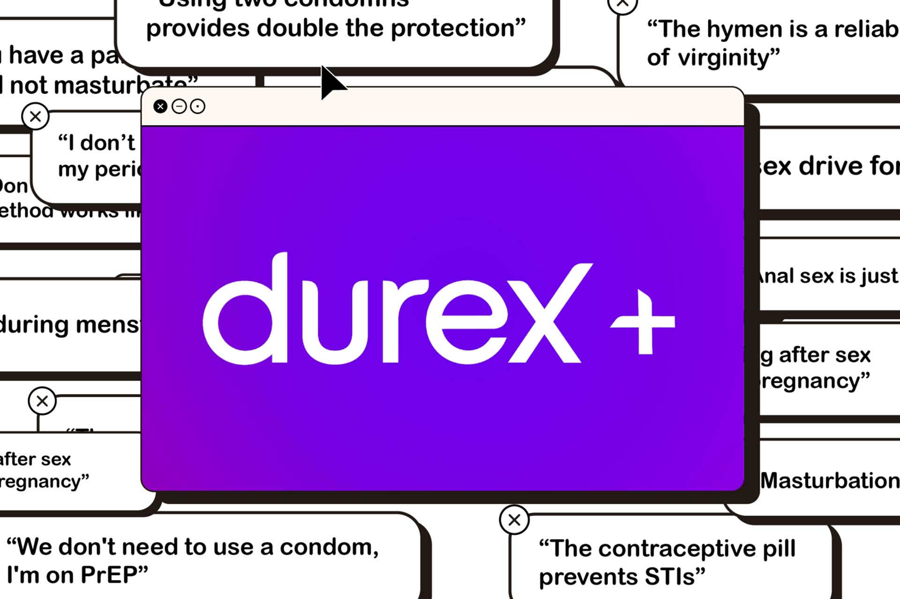
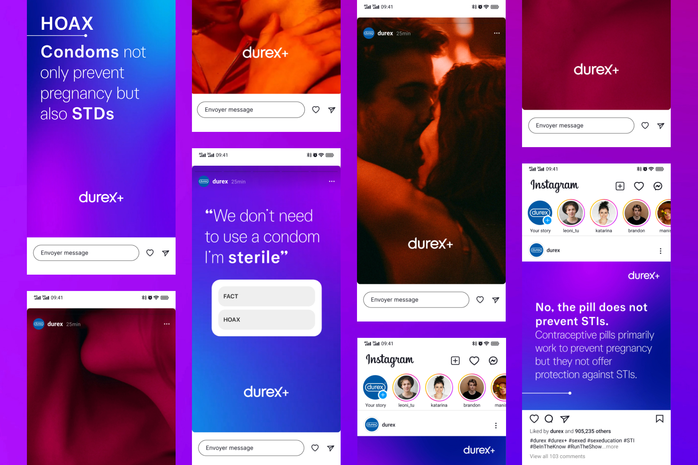
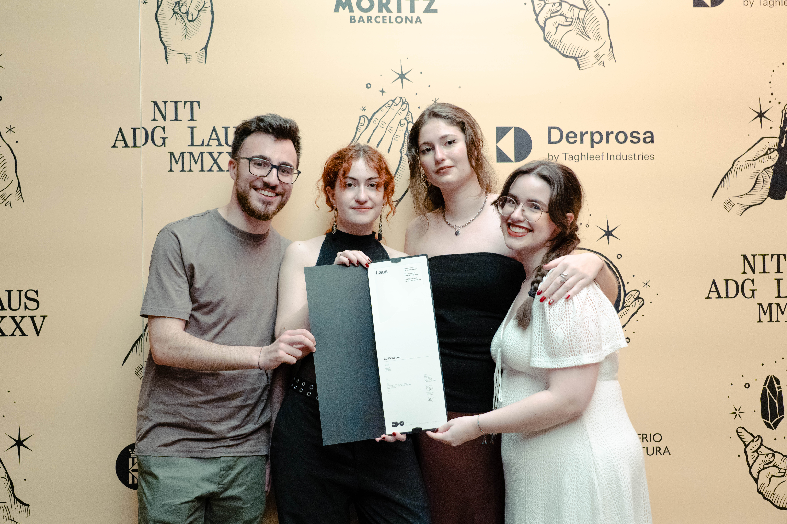

Durex +
Produced with Almudena Redondo, Antonio Sánchez, and Irene Pando.
Tools: Adobe After Effects, Figma, Adobe Illustrator, Adobe Photoshop.
Advertising project that seeks to combat fake news in order to inform and make sex education accessible to younger generations.
Durex is a brand that promotes safe sex. However, in today's digital world, it faces an adversary: misinformation.
With the aim of combating not only current fake news about sex, but also traditional myths that are passed on by word of mouth, we have created an entire campaign. Under the name ‘durex+’, we encourage everyone to deepen their sexual knowledge. We encourage people to learn more. Because when you are informed, you can experiment more freely.
Our communication channels would focus on two main media designed to immediately capture the public's attention: the streets, through billboards, and their phones, through social media. The ultimate goal of these two platforms would be to bring people to the definitive medium, our website.
Through our website, we aim to create a dynamic and safe space for Generation Z, offering accurate and engaging information about sexuality and debunking common myths. With a modern design and intuitive user experience, it provides quick access to diverse educational and multimedia content, backed by sexuality experts.



